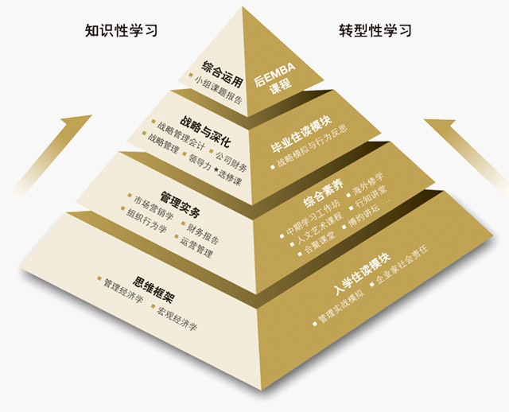

中欧EMBA中文班学制两年，国际班学制20个月，均为在职学习，每月集中授课四天(周四至周日)。
春季班每年4月，秋季班每年9月开课
上海、北京、深圳三大经济中心设有授课点
中欧EMBA中文班课程针对企业家和企业高层管理者的需求，设置了既体现国际管理教育前沿水准又适合中国本土实践的课程体系。两年的在职学习，每月集中一次的精彩课堂，从思维框架，到管理实务，再到战略和整合，层层递进，由点及面，引领学员进入前所未有的管理新高地。贯穿整个课程的领导力发展项目，通过匠心独具的反思与实践，激发学员更大的领导力潜能。
除了结构完备的必修课，中欧EMBA中文班开设几十门丰富的选修课，满足学员不同的管理需求和关注点。为期一年的小组课题项目，学员将在专业教授指导下，综合运用多种管理理论和工具去解决实践中真实面临的问题和挑战。此外，EMBA每年推出海外修学旅行，供中文班学员选修，以开拓学员的国际视野。
EMBA课程之余，人文艺术课程、行知讲堂、合聚课堂、博约讲坛、后EMBA课程等，为EMBA学员提供长期的知识更新和终生学习的平台。
学制20个月：更快获得中欧学位，助力事业发展全英文授课：与国际化师资学习原汁原味的管理真知和实践
国际化课程设置：美欧日韩四个海外模块零距离接触全球市场
多样化学员构成：国际学员比例平均近40%，国际学生来自近15个国家/地区
全球化领导力：应对国际化挑战，融合跨文化冲突。